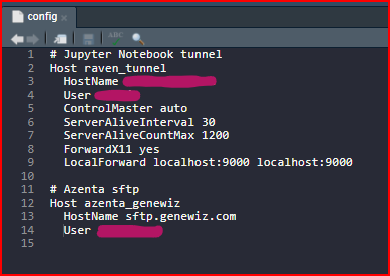

Azenta will email you to notify you that your project is complete and is being uploaded to your account on the Azenta sFTP server, where it will be available for download for 30 days.
This post is showing how to use sftp to download Azenta data files to a local server.
Here I follow the Azenta sFTP Data Download Guide section 3. Command Line for broad instructions.
To start, I first open a bash terminal in a remote hosted RStudio server.
I then make or navigate to a folder where I want the raw fastq files to live within my project directory.
It will look like this:

At this point I attempted to run the command sftp user.name@sftp.genewiz.com and got a strange error saying that the .ssh/config file had an error at line 9. I opened my .ssh/config file in the RStudio and found some errors in the syntax of a previous host entry (thanks to chatgpt). I corrected the errors1 , added an entry for Azenta, saved the file, and re-attempted the sftp command with success. The RSA host key was permanently added to the list of known hosts.
1 The correct config file in the .ssh directory looks like this: 
(base) stanja@raven:~/sarahtanja/coral-embryo-leachate/rawfastq$ sftp stanja_uw@sftp.genewiz.com
The authenticity of host 'sftp.genewiz.com (3.223.11.252)' can't be established.
RSA key fingerprint is <redacted>.
Are you sure you want to continue connecting (yes/no)? yes
Warning: Permanently added 'sftp.genewiz.com,3.223.11.252' (RSA) to the list of known hosts.
stanja_uw@sftp.genewiz.com's password:
Connected to sftp.genewiz.com.I entered my password provided by Azenta, and connected to my account on their server!
- For troubleshooting follow along in this old Roberts Lab github issue by Grace Crandall 1460